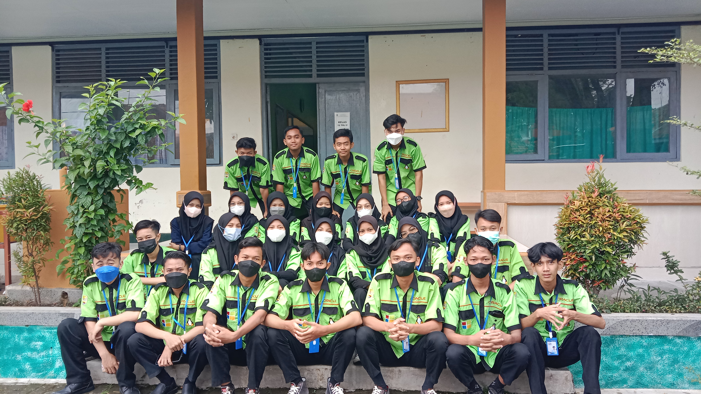
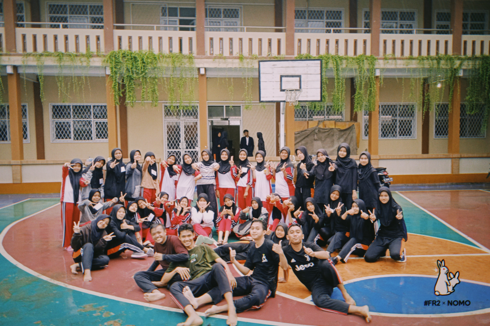

Sedikit cerita tentang masa smk, merupakan masa pendidikan 3 tahun terakhir pada program pendidikan 12 tahun, yang kita kenal dengan istilah masa puutih abu-abu, masa dimana kita mulai beranjak dari yang tadinya remaja menjadi lebih dewasa
Masa mpls
Masa mpls atau yang lebih kita kenal dengan istilah Masa orientasi sekolah, dimana kita yang baru masuk ke sekolah akan...eee gimana ya bahasa nya, mungkin masa penyiksaan gitu kali yaaa, biasa lah yang baru masuk sekolah akan ada masa nya dikerjain dulu oleh kaka kelas yang lebih dulu masuk. Dari berbagai macam sekolah smp, yang tadinya hanya main dengan teman satu smp-nya saja, dimasa ini lah kita mulai saling kenal satu sama lain, yaa minimal teman satu kelas sih kenal atuhh.
Pengenalan lingkungan sekolah
Klik dua kali pada gambar untuk foto ini
Kamu menyukainya0Kali
Disini lah masa nya, masa dimana kita dikerjain oleh kaka kaka osis yang membagongkan. Disuruh beli ini itu lah, kadang disuruhnya tuh beli sesuatu yang langka coba, disuruh pake pakean yang aneh, pake kalung dari rumput misalnya, topi dari bola atau kardus, ini lah masa nya rada degeul sih, tapi ada serunya juga sihh. Diajak keliling sekolah, dikasih tau tentang semua fasilitas yang ada, lucu nya tuh disini, kita nurut aja yaa disuruh baris kaya kambing yang lagi diangon, kadang mentor atau apa bahasanya lah kaka pembina kali yaaa, iya kaka pembina nya suka bawa kayu kecil gitu ya kan, kita nya berasa kaya lagi diangon aja gitu. Masa yang seru dan gak bakal pernah keulang lagii ya kawan kawan, dimana kita bisa saling mengenal satu sama lain.
Kemah bersama pramuka
Persami atau perkemahan sabtu minggu, hanya dua hari satu malam tetapi kenangan nya sulit sekali untuk dilupakan, iya sulit kaya si dia eaaa. Gapapa kan ya sedikit berbagi cerita, mulai berangkat hari sabtu dengan penuh semangat, tas penuh, sampe naik mobil nya pun penuh berdesakan, biasa lahh transpot nya pake mobil truk, biar vibes nya terlihat kaya ngalam aja gitu. Kenangan yang paling teringet sampe sekarang dari perjusami ini adalah, ketika dibangunin jam 2 malem disuruh sholat tahajud dan tau gak setelah sholat kita disuruh apa..., malah disuruh bayangin kalo nanti pas pulang dari kemah ada bendera kuning di depan rumah kita, iyaa kita disuruh bayangin kalo orang tua kita meninggal, apalagi matanya sambil ditutup sama kain gitu, terus pake sound sedih gitu sambil kita nya disemprot semprot pake air, parah banget coba ya kann.
Sebenernya selain itu juga masih ada banyak sih, sedikit aja ya jadi gini..., maaf yaaa pernah, iya ini pernah, iya pernah mandi bareng juga, tapi sama temen segender yaa yakali sama lawan jenis bahaya atuhh itu mah. Seru juga ketika pos pos an, lumayan jauh loh jarak nya, dari mulai dibentak bentak, disuruh push up, ada yang atribut nya diambil, banyak lah kejadian nya, terus ada yang sampe pingsan juga gara gara ga kuat di perjalanan nya, dan yang membuat keinget sampe sekarang tentang pos posan ini adalah ketika sampe di pos istirahat atau pos medis, disana ada kaka kelas lebih tepatnya si teteh yang cantik, seketika pas nyampe pos ini rasa cape sebelumnya hilang semua, ahaahaha. Bahkan sampe acara penutupan pun masih bae saling tatap mata, walau dari kejauhan. Dah cukup lah jangan banyak banyak.
Acara api unggun jangan sampe lupa, acara yang paling hangat di malam hari. Tapi sayangnya disini sabuk smp saya dirampas dan dibakar di api unggun itu, iya jadi ginii, kan sebelum acara api unggun itu ada razia terlebih dahulu ke setiap tenda peserta, dan kalo ada barang yang aneh atau yang tidak ada dalam persyaratan dibawa, barang itu diambil terus dibakar, mungkin kekurangan bahan bakar kali yaa, makannya dibakar buat dijadiin bahan bakar api unggun.
Lika liku tkj
Logo tkj
Teknik komputer dan jaringan, adalah jurusan yang saya jadikan sebagai pilihan utama ketika masuk SMK ini, awalnya saya masuk TKJ ini karena ingin bisa mainin laptop atau komputer aja gituu, biar ga terlalu gaptek aja. Jurusan yang lebih banyak anak laki-laki, tapi perempuan juga tetep ada pastinya. Dibagi jadi 2 aja kali yaa cerita nya, kelas 10 sama 12 nya aja, iya gitu. Mau tau alasannya kenapa..., kan kelas 11 belajarnya daring, yaa itung itung bonus aja kali ya, hahahaha.
Kelas 10
Kelas 10, kelas yang penuh dengan drama teori, semuanya tentang teori nya doang, ga pernah praktek sedikit pun tentang pengenalan gitu. Jangankan praktek, masuk lab komputer nya aja belum dibolehin. Mau tau gak yang lebih kocak nya apa..., masa disuruh ngoding di buku tulis, iya pake pulpen ditulisin gitu kode kode nya. Pelajaran yang paling gak kieng atau males dipelajarin sama anak tkj waktu pas kelas 10 itu ketika belajar tentang sejarah, tau gak sampe sampe nilai pelajaran sejarah di skl itu paling kecil cuman 78 kalo ga salah dan ini tuh pas sama kkm nya. Tapi jangan remehkan juga sih teori teori yang diberikan, ini juga penting loh buat kedepannya kita juga jadi tau tentang dasar dasar dari jurusan tkj ini.
Kelas 12
Akhirnya yang kita tunggu selama ini dari kelas 10 sampe 11, Disini lah dikelas 12 kita mulai diberikan materi peraktek langsung, masih inget pertama kali praktek itu tentang pengkabelan. Walaupun disekolah banyak alat alat buat prakteknya, kaya semacem tang krimping, lan tester, konektor rj nya, kabel nya juga ada, tapi saat itu saya beli semua itu sendiri, saking apa coba, saking pengen bisa lebih cepet dibanding yang lain semua alat itu saya gunakan untuk latihan dirumah. Nah setelah itu, berbagai macam praktek pun kita lakukan, banyak sih sampe gak ke itung. Kelas terakhir dimana serangkaian ujian pun kita jalani, ujikom salah satunya dimana ketika sudah selesai ujikom berasa kaya tenang banget, dan anggapan kami gini: ujian sekolah sih tenang gampang lah, yang penting ujikom udah kelar.

Potret sebelum ujikom
Eskul
Sekolah tanpa eskul, ibarat nantinya ga ada ceritanya banget, kaya semisal pulang terlambat, pulang malem, atau bahkan sampe nginep disekolah.
Basket skensala

Memilih masuk eskul basket ini karena memang meneruskan apa yang sudah ada dari smp, iya karena waktu smp juga hobi basket, bukan hobi sih... jadi gimana ya bilangnya..., jadi gini pas awal masuk basket di masa smp itu niatnya cuman coba coba doang, jadi saya punya pikiran gini: kalo maasuk eskul model kaya futsal, sepak bola kaya gituan mah waktu kecil juga udah pernah mainin, beda dengan basket belum pernah sama sekali main pas waktu kecil. Saya itu orangnya seneng nyoba hal baru, kaya penasaran aja gitu. Dan akhirnya di smk juga memutuskan untuk lanjut main basket lagi, udah banyak hal yang dilalui, suka dan duka ketika berada di eskul ini, tentang pulang terlambat sampai kehujanan, dilarang latihan disekolah sendiri gara gara lockdown covid, main pas kuarter penghabisan doang, rada kesel sih tapi waktu itu masih kelas 10, untung saya sabaran orang nya.
Sampai kelas 12 yang bertahan di eskul ini cuman 7 orang doang, iya untung masih bisa bentuk tim dengan formasi 5 utama, dan 2 orang sisa cadangan, sisanya kalo mau bawa lebih paling ngambil beberapa anak dari kelas 11 sama 10. Angkatan kita itu disebut sebagai angkatan korban covid, pengen latihan aja harus di luar sekolah, turnamen aja cuman ikut sekali kalinya, iya itu juga masih mending daripada gak pernah ikut turnamen sama sekali. Dan tau gak udah sekali ikut turnamen sekali main langsung gugur lagi, tau gak lawan nya apa..., malah ketemu SMAK Penabur cirebon coba, yang notabene nya juara Honda DBL pada masa golongan saya, gapapa sih kalah, pengalaman nya berharga bisa lawan juara Honda DBL se jawa barat.
Roster basket angkatan 2022
Tahfidz qur'an skensala
Tahfidz skensala, di eskul ini lah tempat bagi saya untuk menenangkan jiwa dan raga, agama itu merupakan hal yang utama, keyakinan serta kepercayaan yang kita harus genggam dengan erat. sudah banyak sekali kenangan kenangan yang berlalu, banyak sekali mungkin jika saya tulis satu halaman website ini bahkan tidak akan mampu untuk menampungnya. Pernah juga nginep di sekolahan gara gara nyiapin buat lomba besoknya, ceritanya waktu ulang tahun sekolah itu ada lomba tahfidz juga, ya otomatis kan jadi tuan rumahnya, sebagai tuan rumah yang baik harus mempersiapkan semuanya dengan baik tentunya. Momen ketika nginep ini lah yang paling diinget, mulai dari nyari kopi tengah malem disekitaran sekolah, makan mie bareng bareng sebaskom, banyak lah pokoknya. Kebersamaan dan solidaritas dari angkatan kami ini sangatlah besar.
Si Dia
Sedikit tentang si dia, muncul ketika masa akhir sekolah hanya beberapa bulan terakhir sebelum kelulusan, terhitung kira kira 2 bulan terkhir. Dengan waktu yang sesingkat itu akan teringat sekali kenangannya, saling menatap dari kejauhan, saling lewat depan kelas, pura-pura ketinggalan gorengan di kantin biar bisa balik lagi lewat depan kelasnya, lucu ya semua itu, kalo keinget hanya bisa tersenyum sambil nahan ketawa aja, hahaha.